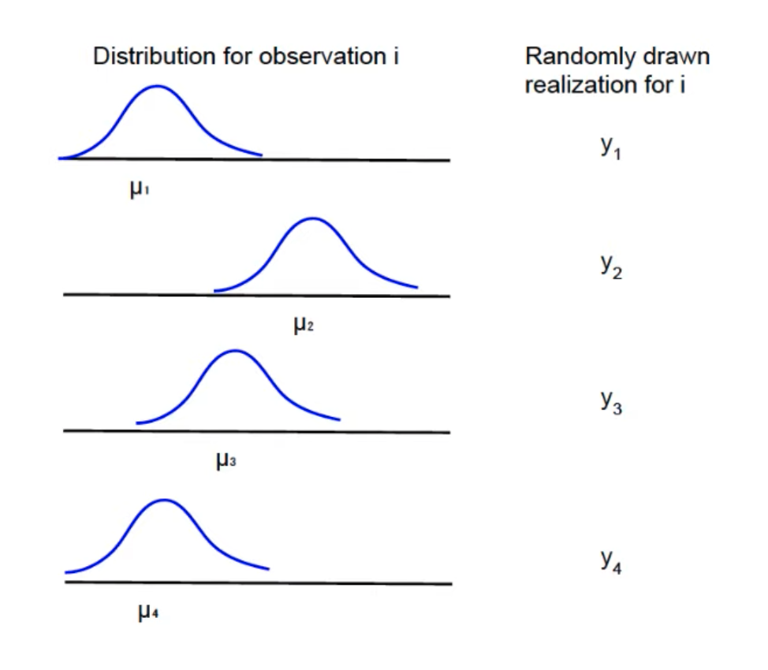
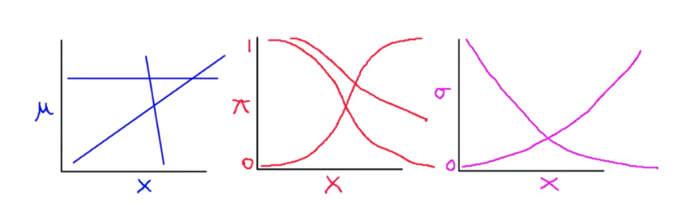
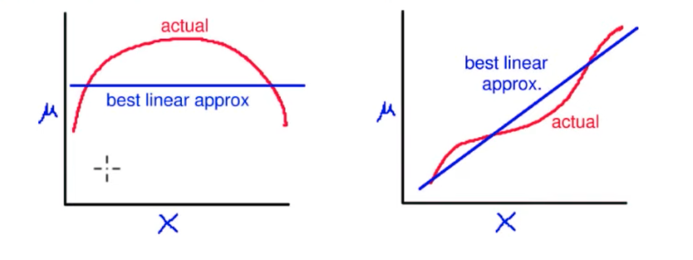

king
https://youtube.com/playlist?list=PL0n492lUg2sgSevEQ3bLilGbFph4l92gH
Statistical inference
Statistical inference = “Using facts you know to learn about facts you don’t know”
Statistical inference is impossible! But just because it’s impossible, it doesn’t mean you shouldn’t do it!
The big picture
Choose: Question of interest (qualitative)
Formalize: Quantity of interest (QOI), given question
Collect: Data, given QOI, question
Assume: Class of models, given data, QOI, question
Estimate from data: [Use estimator (function of the data) to choose] Best model in class, given all of the above
Present results: Given all of the above
QOI estimates (should be interpretable by anyone)
Uncertainty estimates (CIs, SEs, etc.)
Open questions:
Better ways of presenting results
Model dependence
Model class dependence
Data problems
More interesting QOIs
More impactful questions to avoid problems in the first place
Statistical models
A model is an abstraction!
Models are not true/false, realistic/not-realistic… they are useful or not!
Notation
Dependent (or “outcome”) variable
\(Y\) is \(n \times 1\)
\(y_i\) is a number (after we know it) [Y as a column of numbers]
\(Y_i\) is a random variable (before we know it) [Y as the random variable for each unit \(i\)]
Explanatory variables
aka “covariates”, “independent” or “exogenous” variables
\(X = \{x_{ij} \}\) is \(n \times k\) (observations by variables)
\(X\) can be viewed as a set of columns (variables)
\(X\) can be viewed as a set of rows (observations)
\(X\) is fixed (not random) [most of the times but not always true]
Standard notation
\(Y_i = x_i \beta + \epsilon_i\) = systematic + stochastic component
\(\epsilon_i \sim N(0, \sigma^2)\)
Alternative notation
\(Y_i = N(\mu_i, \sigma^2)\) = stochastic component
\(\mu_i = x_i \beta\) = systematic component
Generalized alternative notation
\(Y_i \sim f(\theta_i, \alpha)\) = stochastic component
\(\theta_i = g(x_i, \beta)\) = systematic component
where:
\(Y_i\) is the random outcome variable
\(f()\) is the probability density/mass function
\(\theta_i\) is a systematic feature of \(f()\) (e.g., the mean of a normal distribution) that varies over \(i\)
\(\alpha\) is an ancillary parameter/systematic feature of \(f()\) (e.g., the variance/standard deviation of a normal distribution) that is constant/does not vary over \(i\)
\(g()\) is the functional form (e.g., linear function in the case of linear regression)
\(x_i\) is the explanatory variable vector for \(i\)
\(\beta\) is the “effect parameter” vector
Sources of uncertainty
Estimation uncertainty: Lack of knowledge of \(\alpha\) and \(\beta\). Vanishes as \(n\) gets larger!
Fundamental uncertainty: Represented by the stochastic component. Exists no matter what you do or size of \(n\)!
Model dependence: Maybe the model specification is wrong!
Examples of systematic components
Examples:
\(E(Y_i) = \mu_i = x_i \beta = \beta_0 + \beta_1 x_{1i} + \ldots + \beta_k x_{ki}\)
\(P(Y_i = 1) = \pi_i = \frac{1}{1+e^{-x_i \beta}}\)
\(V(Y_i) = \sigma^2_i = e^{x_i \beta}\)
Interpretation:
Each is a class of functional forms
Setting (or estimating) \(\beta\) picks out one member of the class
Standard procedure
Use theory: Assume a class of functional forms
Use data: Estimate the values of the parameters (to pick out one member of the class)
Remain uncertain: Because of 1) estimation uncertainty, 2) fundamental uncertainty, 3) model dependence
If we choose the wrong family of functional forms, we:
Have specification error, and potentially bias
Still get the best [linear, logit, etc.] approximation to the correct functional form
May be close or far from the truth
Examples of stochastic components
Normal distribution: continuous, unimodal, symmetric, unbounded
Log-normal distribution: continuous, unimodal, skewed, bounded from below by zero
Bernoulli distribution: discrete, binary outcomes
Poisson distribution: discrete, countably infinite on the non-negative integers
Choosing systematic and stochastic components
If one is bounded, so is the other
If the stochastic component is bounded, the systematic component must be globally non-linear (although possibly locally linear) [which is why we can, for example, use linear regression for proportions if they are away from the extremes of 0 and 100%]
All modeling decisions are about the data generation process = the chain of evidence from the world to our observation of it, it should be the first question you ask of every empirical paper!
What if we don’t know the DGP (and we usually don’t know it completely)?
The problem: Model dependence
First line approach: Make “reasonable” assumptions and check fit (and other observable implications of the assumptions)
Second line approach:
Avoid it: Relax assumptions (functional form, distribution, etc)
Detect remaining model dependence
Remove model dependence: Preprocess data (via matching for causal inference, etc)
Data generation process (with simulation)
The data generation process = the chain of evidence from the world to our observation of it
It should be the first question you ask of every empirical paper!
DGP uncertainty -> Substantive uncertainty
For data to be useful, you need the DGP! [because we want to study the world, not the data]
Theory is helpful for data; data is helpful for theory
How we will use the DGP?
Probability: Assumes the DGP
Statistical inference: Learns the DGP
Simulation
Simulation is used to:
Understand the DGP
Solve probability problems
Evaluate estimators (an estimator is a function of the data)
Calculate features of probability densities
Transform statistical inference results (e.g., the “effect parameter” vector \(\beta\)) into quantities of interest
Get the right answer: Easier than mathematical calculations
Survey sampling vs Simulation
XXX
Probability (as a model of the data generation process)
Probability is defined as:
A function \(P(y \mid M) = P(\text{data} \mid \text{model})\) where \(M = (f, g, X, \beta, \alpha)\)
For simplicity: \(P(y \mid M) = P(y)\)
3 axioms define the function \(P()\):
\(P(z) \ge 0\) for some event \(z\)
\(P(\Omega) = 1\) for sample space \(\Omega\)
If \(z_1, \ldots, z_k\) are mutually exclusive events then \(P(z_1 \cup \ldots \cup z_k) = P(z_1) + \ldots + P(z_k)\)
Axioms 1 and 2 imply \(0 \le P(z) \le 1\)
Axioms are not assumptions; they can’t be wrong!
From the 3 axioms come all rules of probability theory
Rules can be applied analytically or via simulation
Quantities of interest in empirical quantitative research
Empirical research = research based on observation or experimentation
Quantitative research = research based on measurements, i.e., the quantification of attributes of an object or event, which can be used to compare with other objects or events
Measurements can be categorized by the following criteria:
type (or level)
magnitude
unit
uncertainty (represents the systemic and random errors of measurement procedures)
Quantities of interest (QOI) in empirical quantitative research:
Data summaries
Inference
Descriptive inference
Counterfactual inference
Prediction
What-If
Causal inference (two perspectives):
Causal prediction: Prediction of intervention
knowing a cause means being able to predict the consequences of an intervention
“What if I do this?”Causal imputation: Imputation of missing data
Knowing a cause means being able to impute unobserved counterfactual outcomes
“What if I had done something else?”
Statistical inference
Inference is “using facts you know to learn about facts you don’t know”.
Statistical inference workflow:
Choose: substantive question of interest
Formalize: quantity of interest (QOI), given question
Collect: data, given QOI and question
Assume: class of models, given data, QOI and question
Estimate from data: best model in class, given class of models, data, QOI and question
- An estimator is a function of the data (e.g., the MLE) used to choose the best model in the class of models
Present results: given all of the above
- QOI point and interval estimates
- Weaknesses and limitations
Statistical models (King’s)
A model is an abstraction/approximation (e.g., sketch of a person).
All models are wrong, some are useful!
Statistical models are very useful for inference.
Notation
Dependent (or “outcome”) variable (aka “variate”):
\(Y\) is a \(n \times 1\) vector (column)
\(y_i\) is a number (after we know it; within a dataset; fixed because observed)
\(Y_i\) is a random variable (before we know it; across datasets; random because unobserved)
Explanatory (or “independent” or “exogeneous”) variables (aka “covariates”, “predictors”)
\(X = \{x_{ij}\}\) \(X\) is a \(n \times k\) matrix (\(n \times k\) cells/numbers organized in a table with \(n\) rows and \(k\) columns)
\(\{x_{ij}\}\) represents the number within a specific cell
Each column is a variable.
\(X\) as a set of columns (variables): \(X = \{ x_1, \ldots, x_k \}\)
Each row is an observation: \(\{ x_{i1}, \ldots, x_{ik} \}\)
\(X\) is (usually but not always) fixed (i.e., not random!)
Equivalent linear regression notation
Standard notation:
\(Y_i = x_i \beta + \epsilon_i = \text{systematic} + \text{stochastic}\)
Systematic: \(x_i \beta = \beta_0 + \beta_1 x_{i1} + \ldots + \beta_k x_{ik}\)
Stochastic: \(\epsilon_i \sim \text{Normal}(0, \sigma)\)
Alternative notation:
Stochastic: \(Y_i \sim \text{Normal}(\mu_i, \sigma)\)
Systematic: \(\mu_i = x_i \beta\)

Generalized alternative notation for most models:
Stochastic: \(Y_i \sim f(\theta_i, \alpha)\)
Systematic: \(\theta_i = g(x_i, \beta)\)
where:
\(Y_i\) is the random outcome variable
\(f(\cdot)\) is a probability density/mass function (probability distribution)
\(\theta_i\) is a parameter of the probability distribution \(f(\cdot)\) that varies over \(i\)
\(\alpha\) is a parameter of the probability distribution \(f(\cdot)\) that doesn’t vary/is constant over \(i\)
\(g(\cdot)\) is the functional form (e.g., linear for linear models)
\(x_i\) is the explanatory variable vector for \(i\) (an observation)
\(\beta\) are the effect parameters/regression coefficients
Forms of uncertainty
Estimation uncertainty: Lack of knowledge of \(\alpha\) and \(\beta\). Gets smaller as \(n\) gets larger.
Fundamental uncertainty: Represented by the stochastic component \(f(\cdot)\). Exists no matter what you do, or the size of \(n\) is.
Model dependence: Maybe the model specification is wrong?
Examples of systematic components

Each is a class of functional forms
\(\beta\) in each is an “effect parameter” vector, with a different meaning
Set \(\beta\) and it picks out one member of the class
Standard procedure:
Use theory: Assume a class of functional forms
User data: Estimate the values of the parameters
Remain uncertain: Because of 1) estimation uncertainty, 2) fundamental uncertainty, 3) model dependence
If we choose the wrong class of functional forms, we:
have specification error, and potentially bias
still get the best [linear, logit, exponential] approximation to the correct functional form
may be close or far from the truth

Examples of stochastic components
Normal: continuous, unimodal, symmetric, unbounded
Log-normal: continuous, unimodal, skewed, bounded from below by zero
Bernoulli: discrete, binary outcomes
Poisson: discrete, countably infinite on the nonnegative integers
Choosing systematic and stochastic components
If one is bounded, so is the other
If the stochastic component is bounded, the systematic component must be globally nonlinear (although possibly locally linear)
All modeling decisions are about the data generation process:
The chain of evidence from the world to our observation of it!
The first question you ask of every empirical paper!
What if we don’t know the DGP (and we usually don’t know it completely)?
The problem: model dependence
Our first approach: make “reasonable” assumptions and check fit (and other observable implications of the assumptions)
Later:
avoid model dependence by relaxing assumptions (functional form, distribution, etc)
detect remaining model dependence
remove model dependence: preprocess data (via matching, etc)
Data generation processes (with simulation)
Probability: Assumes the DGP
Statistical inference: Learns the DGP
Probability
Probability as a mathematical model of the DGP (the process that generated the data/observations in the real world).
Probability is a function
Probability is:
A mathematical function \(P(y \mid M) = P(\text{data} \mid \text{model})\), where \(M = (f, g, X, \beta, \alpha)\), that gives the probability of occurrence of an event \(z\), a subset of the sample space \(\Omega\).
Because \(M\) is assumed, we assume it is always there but we omit it to simplify the notation: \(P(y \mid M) = P(y)\) which itself is a shorthand for \(P(Y = y)\)
Three axioms define the function \(P(\cdot)\):
\(P(z) \ge 0\)
\(P(\Omega) = 1\)
If \(z_1, \ldots, z_k\) are mutually exclusive events: \(P(z_1 \cup \ldots \cup z_k) = P(z_1) + \ldots + P(z_k)\)
Axioms 1 and 2 imply \(0 \le P(z) \le 1\)
Axioms are not assumptions; they can’t be wrong! Probability is a just a very useful mathematical model [of uncertainty/the DGP]
From these axioms come ALL the rules of probability theory
These rules can be applied analytically or via simulation
Probability distributions are also functions
A probability distribution is a mathematical function (PDF for continuous variable, PMF for discrete variable) that gives the probabilities of occurrence of events, subsets of the sample space.
A probability distribution is a function \(p(y)\) such that:
\(p(y) \ge 0\) for any \(y\)
for a discrete variable: \(\sum_{\text{all}\ y} p(y) = 1\)
for a continuous variable: \(\int_{-\infty}^{\infty}p(y)dy = 1\)
Computing probabilities from PDFs/PMFs:
for a discrete random variable:
\(P(a \le Y \le b) = \sum_{a \le y \le b} p(y)\)
\(P(Y = y) = p(y)\)
for continuous random variable:
\(P(a \le Y \le b) = \int_a^b p(y)dy\)
\(P(Y = y) = 0\)